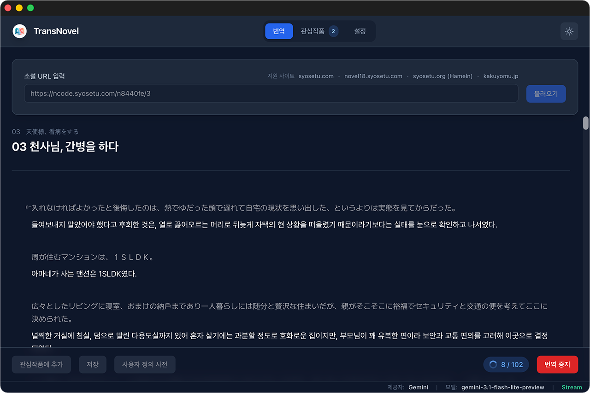

URL만 넣으면 실시간 번역.
Gemini, Claude, OpenAI 등 원하는 LLM으로.

주요 기능
번역 결과가 문단 단위로 바로 표시되어, 긴 챕터도 앞부분부터 먼저 읽을 수 있습니다.
읽고 있는 작품을 등록해 두고, 새 글과 읽은 상태를 한 화면에서 확인할 수 있습니다.
이미 번역한 문장은 캐시에 남아 있어, 같은 내용을 다시 요청하지 않습니다.
번역한 챕터에서 바로 앞뒤 화로 이동해 읽는 흐름을 이어갈 수 있습니다.
Gemini, Claude, OpenAI, OpenRouter, 또는 직접 지정한 엔드포인트까지. 제공자·모델·프롬프트·치환 규칙을 앱 안에서 바꿀 수 있습니다.
번역 결과를 TXT 또는 HTML로 저장해 두면 인터넷 없이도 읽을 수 있습니다.
지원 사이트
小説家になろう
ncode.syosetu.com
ハーメルン
syosetu.org
カクヨム
kakuyomu.jp
ノクターンノベルズ
novel18.syosetu.com
FAQ
xattr -cr /Applications/TransNovel.app을 실행하면 됩니다.